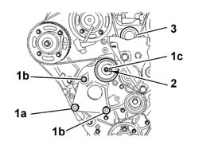
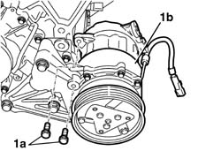
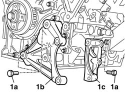
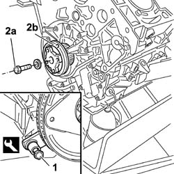
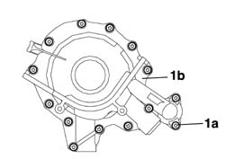
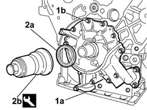
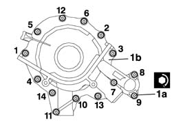
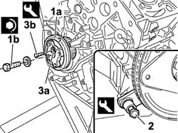
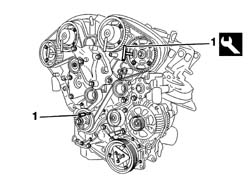

1020D17 ENGIND FRONT COVER - R R
- Path
- Procedures > 10 ENGINE > 1020 CRANKCASE SUMP AND COVERS > 1020D OIL SEALS ON CRANKSHAFT > 1020D17 ENGIND FRONT COVER - R R
- Kind
- repair procedure (removal / refitting; the operation number is the code)
- Applies to
- engines: 3.0 24V V6; all production periods
- Interactive page
- https://sloeber94.github.io/elrnDB-fUlss/en/#/179006901
Applies to: engines: 3.0 24V V6; all production periods
 Removing
Removing
 Refitting
Refitting- Carry out
Op. 1004D40 ENGINE - POSITION ON STAND AND REMOVE
1. Undo the bolt (1a) fixing the timing belt moving tensioner, then loosen the bolts (1b) and the nut (1c) on the moving tensioner.
2. Rotate the tensioner roller cam in a clockwise direction.
3. Remove the upper winding roller, then remove the timing belt starting from the tensioner roller and the water pump.

Applies to: engines: 3.0 24V V6; all production periods
1. Undo the retaining bolts (1a) and remove the air conditioning compressor (1b).

Applies to: engines: 3.0 24V V6; all production periods
1. Undo the bolts (1a) and remove the air conditioning compressor support (1b) and support (1c).

Applies to: engines: 3.0 24V V6; all production periods
1. Fit the flywheel lock.
2. Undo the bolt (2a) and remove the timing belt toothed drive pulley (2b).
Description | Code | Function | |
|---|---|---|---|
1 | Counter-torque | 1.860.846.00 | Flywheel lock |

Applies to: engines: 3.0 24V V6; all production periods
1. Undo the fixing bolts (1a) and remove the crankshaft front oil seal cover with built-in oil pump (1b).

Applies to: engines: 3.0 24V V6; all production periods
Refitting
Removing1. Position the oil pump (1a) on the lower crankcase and screw in the fixing bolts (1b) without tightening them.
2. Fit the oil seal (2a) using the tool (2b).
Description | Code | Function | |
|---|---|---|---|
2b | Tool for fitting oil seal | 1.870.896.000 | Fitting crankshaft oil seal front cover seal (timing side) |

Applies to: engines: 3.0 24V V6; all production periods
1. Tighten the bolts (1a) fixing the crankcase front cover with built-in oil pump (1a) following the procedure described below and the tightening order given in the diagram for each stage.
- Pre-tighten the oil pump fixing bolts to the value given in the table.
Value daNm | Fastening | Component | Ø | |
|---|---|---|---|---|
(pre-tightening) 0.5 | Bolt | ENGINE OIL PUMP | M |
- Tighten the bolts fixing the oil pump to the recommended torque.
- Carry out the tightening several times following the order given until each bolt is at the recommended torque.
Value daNm | Fastening | Component | Ø | |
|---|---|---|---|---|
(-) 0.8 | Bolt | ENGINE OIL PUMP | M |

Applies to: engines: 3.0 24V V6; all production periods
1. Fit the drive pulley (1a) on the crankshaft, then tighten the fixing bolt (1b) to the recommended torque with the flywheel lock fitted.
Value daNm | Fastening | Component | Ø | |
|---|---|---|---|---|
(-) 4 + 80° | Bolt | DRIVE PULLEY(PULLIES) TIMING | M |
2. Remove the flywheel lock.
3. Rotate the crankshaft to align the opening (3a) in the drive pulley with the opening in the crankcase, then insert the tool (3b) for timing the crankshaft.
Description | Code | Function | |
|---|---|---|---|
2 | Counter-torque | 1.860.846.000 | Flywheel retainer |
Description | Code | Function | |
|---|---|---|---|
3b | Toothed timing pullies retaining tool | 1.870.893.000 | Timing pullies reaction pins |

Applies to: engines: 3.0 24V V6; all production periods
1. In order to lock the timing pullies in the correct timing position, insert the retaining tools in the special housings in the camshaft pullies and fit a pin in the crankshaft housing.
Description | Code | Function | |
|---|---|---|---|
1a | Toothed timing pullies retaining tool | 1.870.893.000 | Timing pullies reaction pins |

Applies to: engines: 3.0 24V V6; all production periods
- Position the air conditioning compressor mounting brackets, then tighten the bolts fixing them to the crankcase to the recommended torque.
Value daNm | Fastening | Component | Ø | |
|---|---|---|---|---|
(lower crankcase) 4 | Bolt | COMPRESSOR MOUNT (AC) | M10 X 1.5 |
- Position the air conditioning compressor on the supports and tighten the fixing bolts.
- Remove the timing pulley retaining pins.
Description | Code | Function | |
|---|---|---|---|
Toothed timing pullies retaining tool | 1.870.893.000 | Timing pullies reaction pins |
- Rotate the crankshaft through two revolutions in its direction of rotation to allow the timing belt to bed in.